長期トレンド
JKMとJEPXシステムプライスの推移グラフ
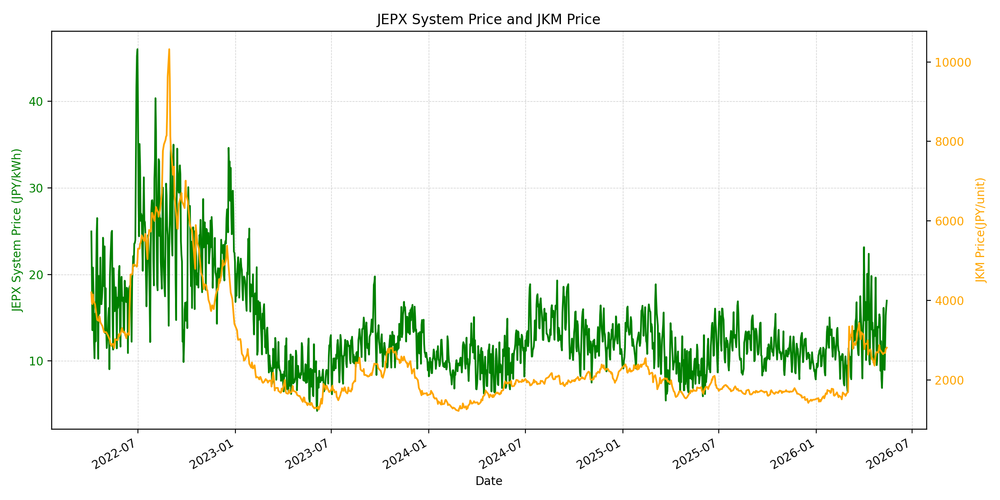
WTIの推移グラフ
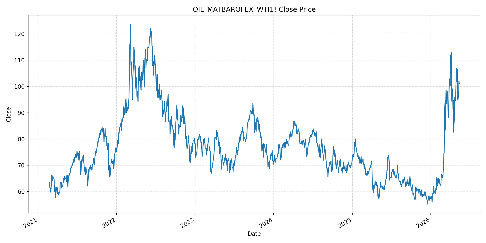
JEPXエリアプライスグラフ（直近一年分）
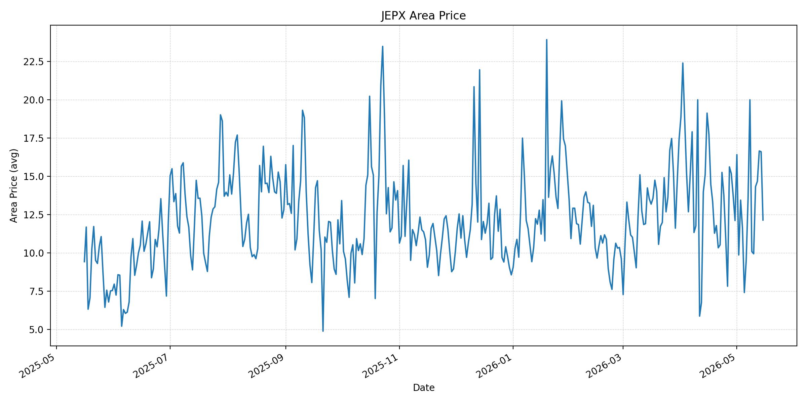
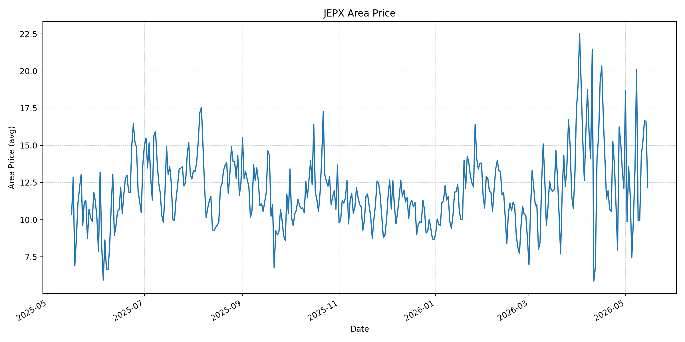
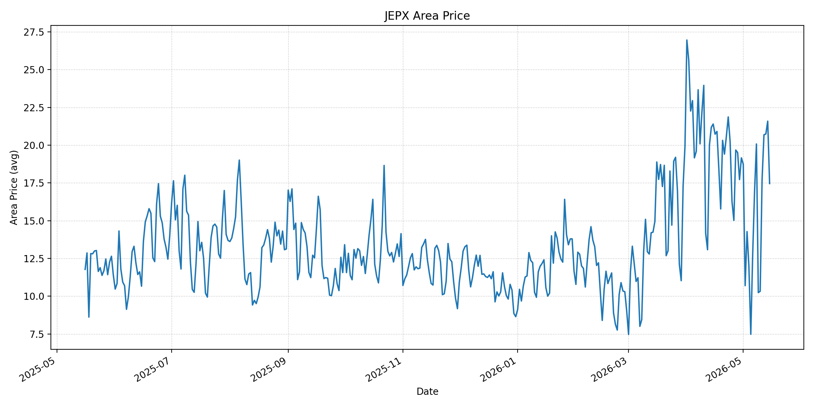
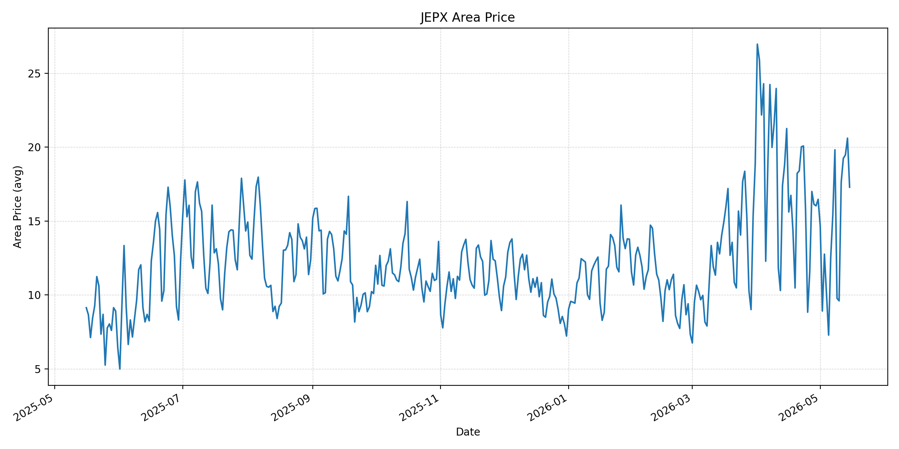
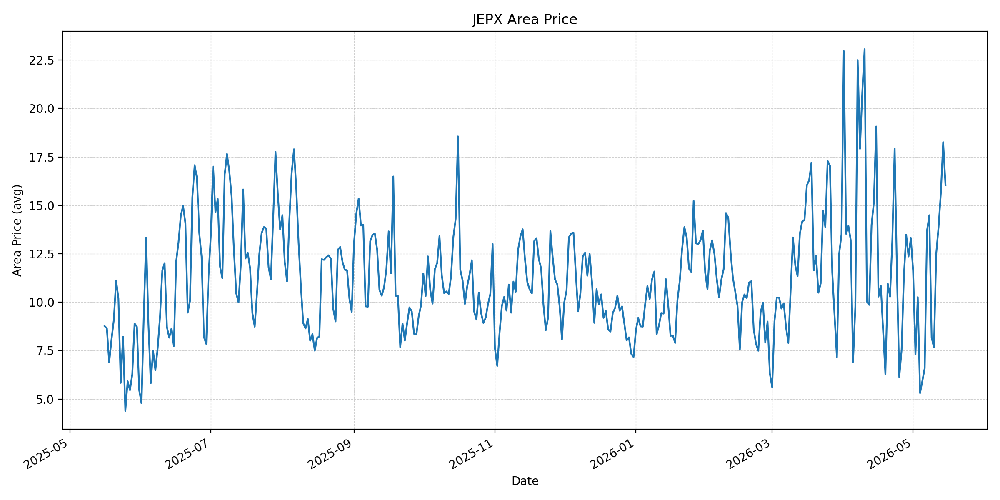
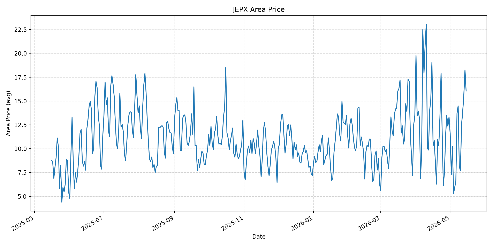
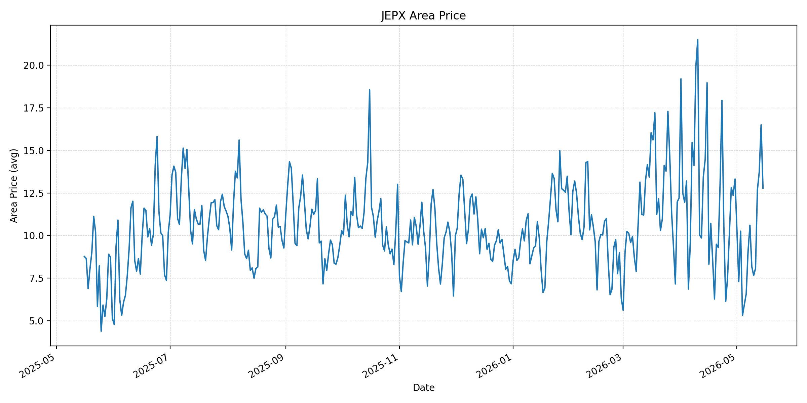
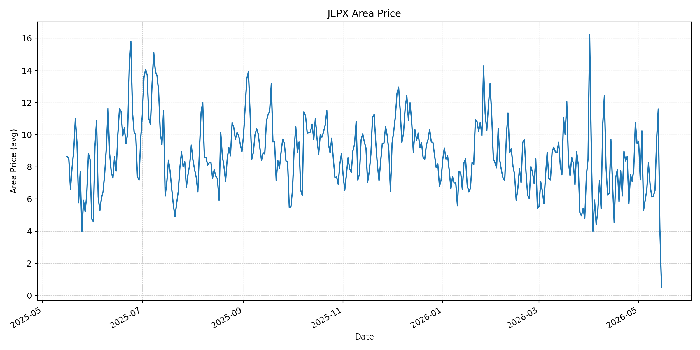
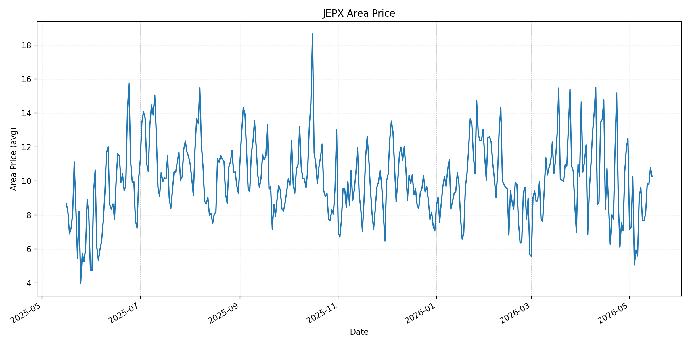
短期トレンド
JKMとJEPXシステムプライスの推移グラフ
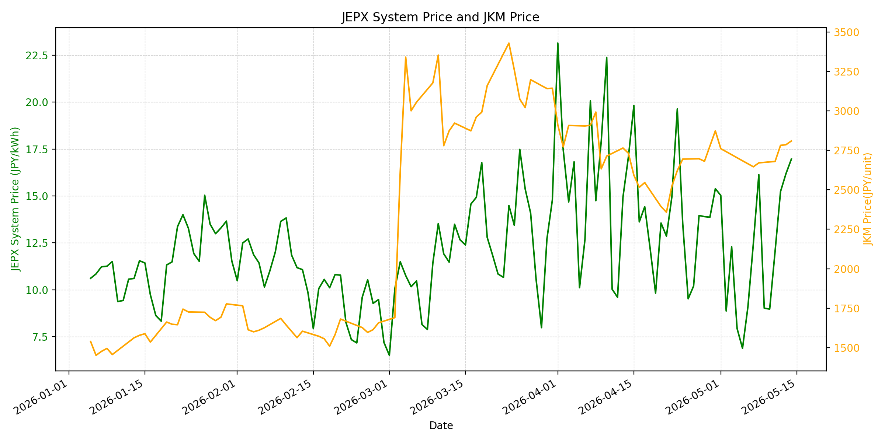
WTIの推移グラフ
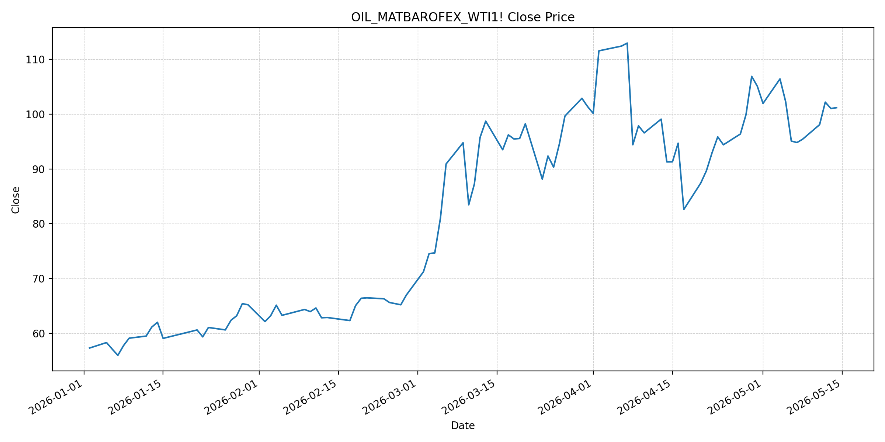
JEPXシステムプライス
JEPXは受渡日ベースの最新非空値で評価しています。最新値は 2026-05-15 分です。先週終値は 2026-05-08 時点の直近値、先月終値は 2026-04-30 時点の直近値で評価しています。
| エリア | 当日価格 | 前日価格 | 前日比（％） | 先週終値 | 先週比（％） | 先月終値 | 先月比（％） | 過去最高値 | 最高値比（％） |
|---|---|---|---|---|---|---|---|---|---|
| システム | 13.67 | 16.97 | -19.45 | 16.14 | -15.3 | 15.39 | -11.18 | 64.06 | -78.66 |
| 北海道 | 12.14 | 16.6 | -26.87 | 19.99 | -39.27 | 12.11 | 0.25 | 73.92 | -83.58 |
| 東北 | 12.14 | 16.58 | -26.78 | 20.08 | -39.54 | 12.11 | 0.25 | 84.92 | -85.7 |
| 東京 | 17.46 | 21.59 | -19.13 | 20.08 | -13.05 | 19.16 | -8.87 | 86.13 | -79.73 |
| 中部 | 17.29 | 20.61 | -16.11 | 19.82 | -12.76 | 16.47 | 4.98 | 52.06 | -66.79 |
| 北陸 | 16.05 | 18.26 | -12.1 | 14.49 | 10.77 | 13.32 | 20.5 | 46.48 | -65.47 |
| 関西 | 16.05 | 18.26 | -12.1 | 14.49 | 10.77 | 13.32 | 20.5 | 46.48 | -65.47 |
| 中国 | 12.79 | 16.5 | -22.48 | 10.61 | 20.55 | 13.32 | -3.98 | 46.48 | -72.49 |
| 四国 | 0.49 | 4.17 | -88.25 | 6.9 | -92.9 | 9.46 | -94.82 | 46.48 | -98.95 |
| 九州 | 10.27 | 10.78 | -4.73 | 9.63 | 6.65 | 12.5 | -17.84 | 40.54 | -74.67 |
LNG先物価格
最新値は 2026-05-14 の LNG(close) です。先週終値は 2026-05-07 時点の直近値、先月終値は 2026-04-30 時点の直近値で評価しています。
| 当日価格 | 前日価格 | 前日比（％） | 先週終値 | 先週比（％） | 先月終値 | 先月比（％） | 過去最高値 | 最高値比（％） |
|---|---|---|---|---|---|---|---|---|
| 2810 | 2786 | 0.86 | 2646 | 6.2 | 2874 | -2.23 | 10319 | -72.77 |
石油先物価格
最新値は 2026-05-14 の OIL(close) です。先週終値は 2026-05-07 時点の直近値、先月終値は 2026-04-30 時点の直近値で評価しています。
| 当日価格 | 前日価格 | 前日比（％） | 先週終値 | 先週比（％） | 先月終値 | 先月比（％） | 過去最高値 | 最高値比（％） |
|---|---|---|---|---|---|---|---|---|
| 101.17 | 101.02 | 0.15 | 94.81 | 6.71 | 105.07 | -3.71 | 123.7 | -18.21 |
ニュース
イラン情勢に関するニュース
- 2026年5月14日、APは、UAE沖で停泊中の船舶が拿捕されイラン水域へ向かったほか、オマーン沖の貨物船が攻撃後に沈没したと報じました。イラン当局者は米国関連タンカーを拿捕する権利があるとの立場を示しており、停戦協議中でも海上リスクは高い状態です。 参照: AP, 2026-05-14
- 2026年5月14日、Reutersは、米中首脳がホルムズ海峡の開放維持で一致した一方、米政府内ではイラン戦争の経済・政治的影響を抑える対応が続いていると報じました。イラン国営メディアは船舶通過の増加を示しましたが、攻撃と拿捕が供給懸念を残しています。 参照: MarketScreener/Reuters, 2026-05-14
ホルムズ海峡経由の石油・LNGに関するニュース
- 2026年5月14日、Reutersは、イラン国営メディアが前日夜以降に約30隻の船舶がホルムズ海峡を通過したと伝えた一方、戦前の通常時は1日約140隻だったと報じました。ブレントは一時107.13ドル、WTIは101.17ドルで終了し、通航再開の兆しは価格上昇を抑える一方で供給不安を消していません。 参照: MarketScreener/Reuters, 2026-05-14
- 2026年5月14日、Reutersは、中国の超大型タンカーがイラク産原油200万バレルを積んでホルムズ海峡を通過し、戦闘開始後に確認された中国石油タンカーとして3隻目になったと報じました。イランはイラクやパキスタンとの原油・LNG輸送合意を通じ、海峡支配を強めている可能性があります。 参照: Newsweek Japan/Reuters, 2026-05-14
ホルムズ海峡経由でない石油・LNGに関するニュース
- 2026年5月14日、Reutersは、中国がホルムズ依存を減らすため米国産原油の購入に関心を示したと報じました。実際の輸入再開には関税や商業条件が残りますが、非ホルムズ調達を増やす方向性は、アジア全体の調達競争を強める可能性があります。 参照: MarketScreener/Reuters, 2026-05-14
- 資源エネルギー庁は、中東緊迫化を踏まえた対応として、原油の代替調達について5月は約6割、6月は7割以上の目途を示し、5月時点では第3弾の国家備蓄放出を決定しない方針を示しています。LNGについては、電力・ガス会社の在庫がホルムズ経由輸入量の約1年分に相当すると整理しています。 参照: 資源エネルギー庁, 2026-05-15確認
日本国内のイラン戦争に関係するニュース
- 2026年5月14日、茂木外相は、日本関係船舶1隻がホルムズ海峡を通過し、日本へ向けて航行していると発表しました。Reutersによると、船舶追跡データではENEOS系タンカー「ENEOS ENDEAVOR」が通過し、クウェート産120万バレルとUAE産70万バレルの原油を積載しています。 参照: Newsweek Japan/Reuters, 2026-05-14
- 2026年5月14日、時事通信は、ENEOS ENDEAVORが5月末から6月初旬に日本へ到着する見込みで、通航料は支払っていないと報じました。日本関連の原油タンカーのペルシャ湾脱出は、出光興産系に続き2隻目です。 参照: nippon.com/時事通信, 2026-05-14
インサイト
ニュース事項による日本の電力市場への影響（短期：数日〜1週間）
- JEPXシステムプライスは 13.67 円/kWhで前日比 -19.45%、先週比 -15.3% と反落しました。東京は 17.46、中部は 17.29 と相対的に高い一方、四国は 0.49 まで低下しており、短期価格は燃料よりもエリア需給の影響を強く受けています。
- LNGは 2810 と前日比 0.86%、OILは 101.17 と前日比 0.15% で、いずれも先週比では上昇しています。ホルムズ通航が約30隻まで戻ったとの報道は安心材料ですが、船舶拿捕と沈没が同日に発生しており、数日から1週間は燃料・保険・船腹コストのリスクプレミアムが残ります。
- 日本関連タンカーの通過は国内調達に前向きですが、JEPXは当日下落しています。したがって短期の電力市場では、ホルムズ関連ニュースが即座にスポット価格を押し上げるというより、火力燃料の限界費用と地域需給の組み合わせで上振れしやすい状態と見るのが妥当です。
ニュース事項による日本の電力市場への影響（長期：1ヶ月〜半年）
- OILは先月比 -3.71%、LNGは先月比 -2.23% と4月末を下回りますが、先週比ではそれぞれ 6.71%、6.2% 上昇しています。海峡通航が選別的に再開しても、通常時の交通量へ戻らなければ、燃料価格の下値は限定されやすいです。
- 資源エネルギー庁は原油代替調達と備蓄で6月分の確保に目途を示し、LNG在庫も厚いと整理しています。これは物理的な供給途絶リスクを下げますが、非ホルムズ原油を巡るアジアの調達競争や長距離輸送コストは、1ヶ月から半年の燃料費に遅れて反映される可能性があります。
- JEPXシステムは先月比 -11.18% まで下がりましたが、中部は先月比 4.98%、北陸・関西は 20.5% 上昇しています。長期では全国平均よりも、燃料調達条件、火力稼働、再エネ出力が重なるエリア別の価格差を前提に、ヘッジと相対契約の燃料費条項を点検する必要があります。